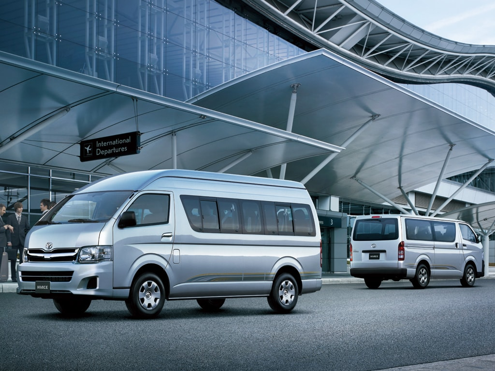

Sewa Hiace Jogja
Tentang Kami
Mau Sewa Hiace Commuter di Jogja? dengan harga yang murah? unit keluaran terbaru? pelayanan profesional? pesan saja di Sewa Hiace Jogja. Biro perjalanan yang terbaik di Jogja dan sekitarnta dan banyak direkomendasikan. Selain Toyota Hiace Commuter, kami juga dapat menyediakan semua jenis alat transportasi darat lainnya. Karena, Kami merupakan salah satu perusahaan travel yang terbaik dan Profesional di Jogja.
Perkembangan pariwisata di Jogja mulai dikenal oleh masyarakat mancanegara khususnya. Mereka mengenal Jogja dengan keindahan alamnya, seni Jogja dan budaya Jogja sangat memikat hasrat mereka ingin mengunjungi Jogja. Sebagai destinasi wisata yang aman dan nyaman, Jogja sudah dilengkapi dengan faslilitas wisata yang sangat lengkap diantaranya akomodasi atau hotel dan restaurant plus fasilitas pendukung wisata Jogja lainnya. Sewa Hiace Jogja adalah agen untuk melengkapi transportasi wisata anda selama di jogja.
Saat ini kami telah memberikan pelayanan bagi tamu-tamu yang ingin paket wisata Jogja dengan rangkaian produk yang dimiliki dipastikan tamu yang ber wisata ke Jogja akan mendapat kenyamanan dan kepuasaan tersendiri selain bergerak dibidang sewa menyewa kendaraan, khususnya Sewa Mobil Hiace Jogja.
Sewa Hiace Jogja adalah perusahaan yang khusus menyiapkan paket Sewa Mobil di Jogja telah mengembangkan layanan dalam website yang diharapkan bisa sebagai perantara informasi penyewaan Mobil di Jogja bagi seluruh masyarakat yang ingin wisata ke Jogja. Adapun produk yang telah kami siapkan untuk menjawab ketidak tahuan anda akan informasi.
Percayakanlah wisata anda ke Jogja bersama kami dengan staff yang telah berpengalaman akan selalu siap memberikan pelayanan dan memastikan wisata ke Jogja anda akan menyenangkan bersama kami. Akan kami jaga kualitas segelanya yang diperlukan.
Pemesanan sangat mudah, order bisa via telepon / WhatsApp. Penjemputan dimanapun bisa, tujuan kemanapun bisa. Driver kami akan menjemput dan mengantarkan Anda sampai ke tujuan.
Untuk Anda yang ingin sewa hiace commuter di Jogja, kami mewajibkan minimal mobil + Sopir. Apakah bisa lepas kunci? sewa mobil lepas kunci hanya berlaku untuk orang yang sudah kami percaya dan kami kenal saja.
Kelebihan
Jika Anda sedang mencari kendaraan yang mampu menampung 15 orang penumpang, dengan kenyamanan lebih dari mobil lain. Maka Toyota Hiace adalah pilihan yang tepat. Mobil commuter ini sangat cocok untuk liburan group selama di Jogja.
Toyota Hiace adalah sebuah terobosan baru minibus dengan kapasitas yang lebih lapang dan pastinya lebih nyaman khususnya untuk tour di Jogja bersama rombongan. Toyota hiace merupakan produk terbaru minibus dari pabrikan Toyota yang mengedepankan kenyamanan untuk perjalanan wisata anda di Jogja. Di lengkapi dengan fitur yang lengkap menjadikan minibus pariwisata ini menjadi salah satu armada wisata yang favorit. Hal lain yang membuat istimewa dengan sewa toyota hiace Jogja ini dimana dengan body yang lebih ramping memungkinkan masuk ke jalan jalan yang sempit untuk menjemput di hotel hotel di area legian atau kuta.
Alasan lain yang membuat para wisatawan memutuskan untuk sewa Toyota hiace adalah karena kenyamanan dari cabin dan juga suspensinya, jadi anda tidak akan merasa pegal walaupun menempuh perjalanan jauh. Mobil ini sangat nyaman untuk ditumpangi, jadi Anda tidak akan merasa capek saat berada di mobil. Serta suhu dalam kendaraan yang sejuk, karena kemampuan dari AC mobil yang sampai ke daerah paling belakang kabin mobil.
Overview
Ini adalah beberapa pilihan dari bus yang kami sewakan

Kursi Tampak dari Belakang

Kursi Tampak dari Depan
Fitur
Fitur dan spesfikasi Sewa Toyota hiace Jogja
- Kapasitas tempat duduk : 14 seater ( incl driver )
- Pedingin : AC double blower di cabin penumpang
- Audio : LCD monitor, DVD fortable
- Fitur lainnnya : pintu slider, power steering
- Panjang : 5,380 m
- Lebar : 1,880 m
- Tinggi : 2,289 m
- Kapasitas mesin : 3.450 cc
Harga
Harga Sewa Toyota Hiace Di Jogja
Durasi Harga
5 Jam Rp 700.000
10 Jam Rp 1.000.000
Overtime / Jam Rp 100.000
Syarat dan Ketentuan
Syarat & Ketentuan Sewa :
- Harga Berlaku selama persediaan unit masih ada dan dapat berubah sewaktu – waktu tanpa pemberitahuan terlebih dahulu
- Harga Diatas Sudah Termasuk : Driver & Bensin
- Harga Tidak Termasuk : Parkir, Tiket Masuk Obyek Wisata, Konsumsi, Penginapan & Tipping Driver ( Suka & Rela )
- Penyewa Wajib mengirimkan foto / scan 2 identitas asli yang berlaku via WhatsApp / Email
- Untuk Pemesanan silahkan tentukan : Alamat Penjemputan, Nama Lengkap, Tanggal, Jam serta membayar Booking Fee sebesar 50% dari nilai total sewa mobil keseluruhan
- Pembayaran Pelunasan dilakukan di hari pertama diwaktu penjemputan
- Pembayaran Booking Fee / Pelunasan mohon di transfer ke Rekening Perusahaan Kami :
- Nama Bank : Bank Central Asia ( BCA )
- Booking Fee tidak dapat dikembalikan apabila ada pembatalan sepihak dari penyewa
- Untuk kenyamanan pelanggan khusus tujuan luar kota yang menginap lebih dari satu hari, kami mohon Anda memberikan penginapan untuk supir Anda
- Dengan mengorder transportasi kepada kami, maka dianggap menyetujui ketentuan di atas
Hubungi Kami
JAM BUKA KANTOR
Senin, 07:00 – 22:00 WIB
Selasa, 07:00 – 22:00 WIB
Rabu, 07:00 – 22:00 WIB
Kamis, 07:00 – 22:00 WIB
Jumat, 07:00 – 22:00 WIB
Sabtu, 07:00 – 22:00 WIB
Minggu, 07:00 – 22:00 WIB
KONTAK
Email: pagiharitour@gmail.com
Hp: 0822 1356 7890
Whatsapp: 0877 0456 7890
ALAMAT KANTOR
Office: Gendeng GK-IV / 869 RT. 77 / RW.18 Baciro Gondokusuman Yogyakarta 55225